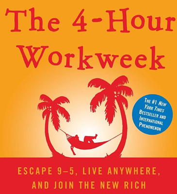

< < < Back
Are You Riding The Tim Ferriss Wheel? – Return Of Kings
Once upon a time, I was a Tim Ferriss groupie.
Well, not exactly, but I did think The 4-Hour Workweek was the greatest invention since RU-486. When I first went to Barnes & Noble to get my copy, I spent what seemed like an eternity poring over its pages, in awe at its philosophy and advice, only stopping when the manager announced over the intercom that the store was closing in fifteen minutes. It took me all of a weekend to finish the book, but even before then I was brainstorming idea upon idea for creating my own four-hour workweek.
Having spent a good portion of the past five years of my life hustling online, I was overjoyed at finally finding a roadmap to the land of riches. Unfortunately, that roadmap had a huge hole in the middle.
Don’t worry, this isn’t going to be some “anti-game” type hater screed: “Tim Ferriss is a LIAR and a SCAMMER wah wah wah POOR ME!” Realistically, the most I lost from The 4-Hour Workweek was $10 and about a week’s worth of sleepless nights. I’m still a fan of Ferriss’ books and I read his blog (not regularly, but whenever he writes a new post).
But I’d still tread carefully around him.
Asking a guy like Tim Ferriss for business advice is like asking a woman how to get laid. Girls spout useless pabulum like “just be yourself” because they have no clue what being a man is like—all most girls have to do is show up and they’ll get men drooling over them. Tim Ferriss is selling a lifestyle that is achievable, but only by people who are named “Tim Ferriss.” Here’s why.

1. Tim Ferriss had a massive head start in life, but doesn’t factor this into his advice.
Ferriss argues that anyone can flee the 9-to-5 existence by following his advice of plagiarizing paraphrasing other sources to create online businesses and having virtual assistants from India doing the grunt work. And Ferriss’ rags-to-riches story is so inspiring it would make Horatio Alger shed a tear:
And he sincerely believes that you too can have a four-hour workweek despite not having his wealthy upbringing, his upper-class education, or his network of connected friends. Just like how you can pick up girls by “being yourself.”
I’m not knocking Ferriss—he’s a smart guy who’s made a comfortable living. But his entrepreneurial advice is worthless for most because he’s unwilling—or unable—to acknowledge that he had an easier journey to the finish line than most. Sure, you might be able to eke out a good income plagiarizing paraphrasing NexxtLevelUp articles for a fitness DVD set, but you’re just as equally likely to win the lottery, and Megaball tickets are both cheaper and don’t take as much time to use.
Take a spin on the Tim Ferriss Wheel and you’ll just end up right back where you started, a little more nauseous than when you began.
2. The 4-Hour Workweek’s advice doesn’t scale.
Ferriss’ advice became useless the day he became popular enough to get a book deal. Cheating your way to wealth with your flunky Deepak might have worked ten years ago, but with hordes of Ferriss-wannabes now gunking up the works, every one of them gets an increasingly smaller chunk of the pie. Ferriss fanboys are the equivalent of the clueless dorks who read The Game when it was released and descended upon the dive bars wearing furry pimp hats doing impromptu palm readings.
Too bad we can’t have an HB8.5 burst into mocking laughter every time some cubicle slave starts up an affiliate marketing site pushing weight-loss pills.
3. The only way to make money online is to shut up and do the work.
The Internet is not some parallel universe exempt from the laws of reality. Anyone who has anything here got it because they worked for it. Like in the real world, success in the world of online hustling is dependent on what your strengths are, how you leverage them, and who you network with. There are no shortcuts or loopholes beyond those that will help you learn the basics faster. My new book Confessions of an Online Hustler emphasizes this: unless you toil away and create a legit product that will enlighten and/or entertain people, your hustle will go nowhere.
But therein lies the problem: the kinds of people who slavishly defend the Tim Ferrisses of the world can’t handle the truth. They don’t want to be told that the only way to achieve anything in this world is to toil for it. They’d rather believe that there’s a magic pill that can get them to shed their jiggling blubber rolls; that there’s a magic line that will get women to suck their dicks; that there’s a magic method that will allow them to spend the rest of their lives sunning themselves at the beach while a half-literate wage-slave in Calcutta runs a network of drop-shipping online stores for them.
Tim Ferriss is the patron saint of lazy-asses.
Read More: How I Found Freedom In An Unfree World


{kind=link}
{kind=link}
{kind=link}